SDR4NOOB
SDR4NOOB
Всё в одном для начинающего радиолюбителя
Бесплатная программа для Windows, которая превращает недорогой USB-донгл RTL-SDR в радиоприёмник, ТВ-измеритель, станцию приёма снимков со спутников и локатор самолётов. Всё в одном окне, по-русски, со встроенным драйвером и подробным руководством для начинающих.
Скачать для Windows Как установить Быстрый старт
Windows 10/11 x64 · RTL-SDR Blog V3/V4 и другие донглы на RTL2832U · без антенны есть тестовый эфир для знакомства

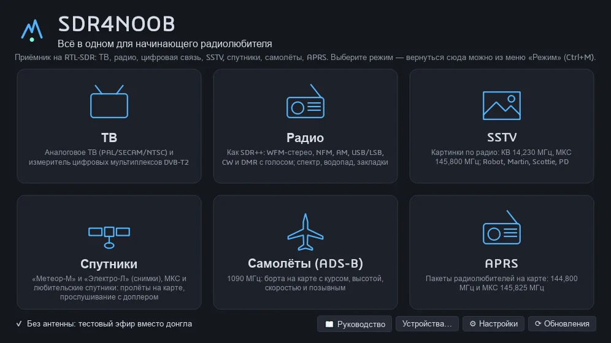
Возможности по режимам#
Радио
Универсальный приёмник в духе SDR# и SDR++: спектр и водопад всей полосы с масштабом, настройка щелчком, демодуляторы WFM-стерео с RDS, NFM, AM, USB/LSB, CW и цифровой DMR с голосом (номера абонентов, слоты, цветовой код, вокодер AMBE+2 через mbelib). АРУ, шумодав, шумоподавитель звука, бланкер помех, поиск DMR по диапазонам, менеджер частот (импорт CSV и Frequencies.xml из SDR#), запись звука в WAV, запись и воспроизведение базовой полосы IQ (WAV из SDR#/SDR++, cu8 из rtl_sdr).

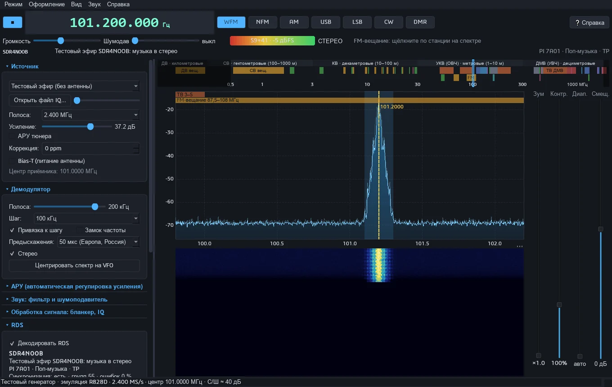

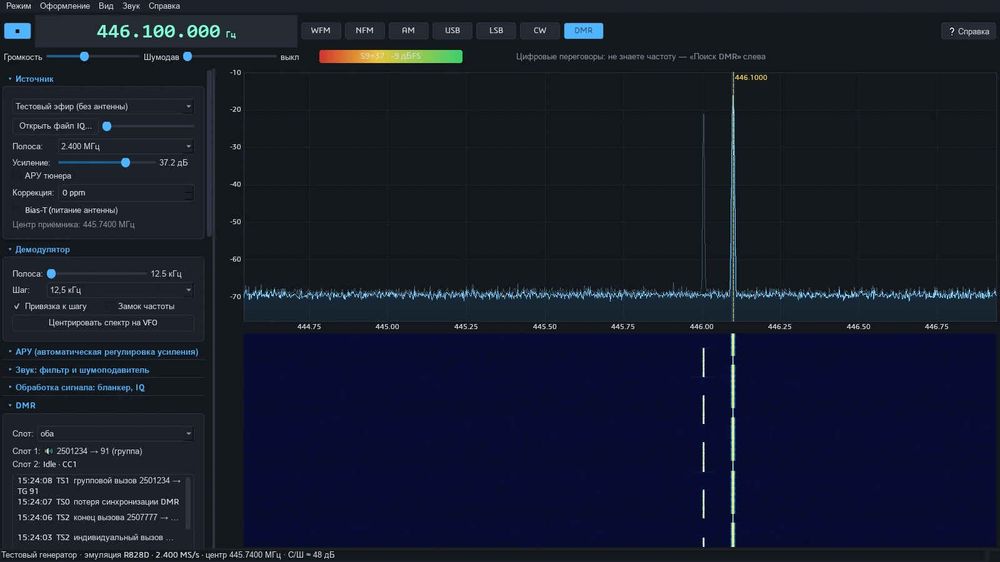
Спутники
Прогноз пролётов по TLE (SGP4) на карте и в таблице с фильтрами, приём снимков «Метеор-М» №2-3/№2-4 (LRPT 137,9 МГц, OQPSK 72k и 80k с перемежением — режим определяется сам) с композитами и автоприёмом по расписанию, запись и декодирование IQ-файлов, снимки геостационарных «Электро-Л» (LRIT 1691 МГц), прослушивание МКС и любительских спутников с автоматической коррекцией доплера, свои спутники по номеру NORAD и галерея принятых снимков.

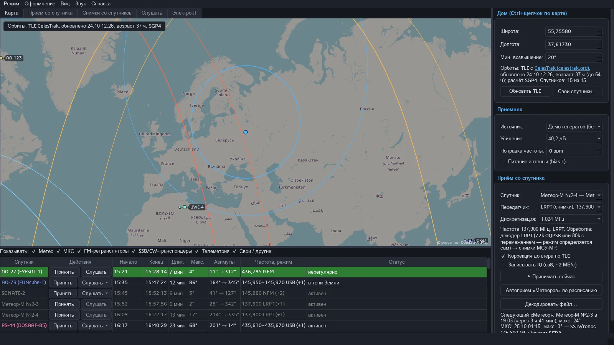

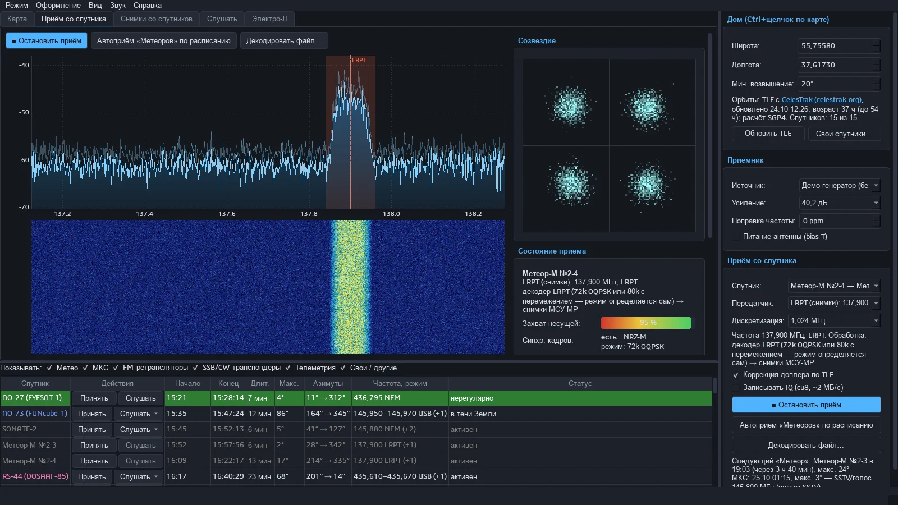

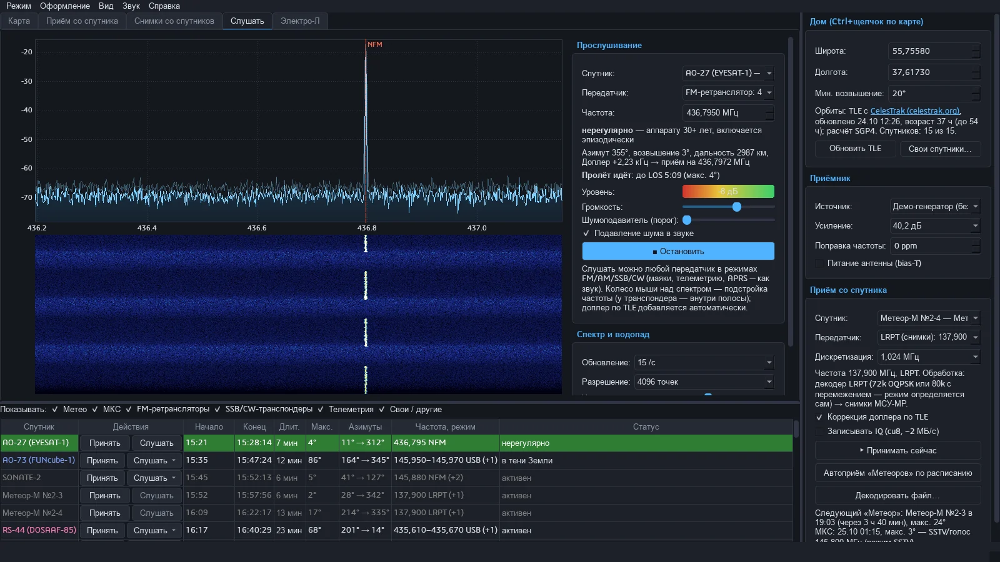
Самолёты (ADS-B)
Приём 1090 МГц: борта на карте OpenStreetMap с курсом, высотой и следами, таблица «Борта сейчас», расшифровка каждого сообщения, история сеанса, карточка борта с флагом страны и сведениями о типе и операторе. Отдельный список бортов без координат (при подавлении GNSS) и отбраковка подменённых позиций. Журнал в CSV/KML.

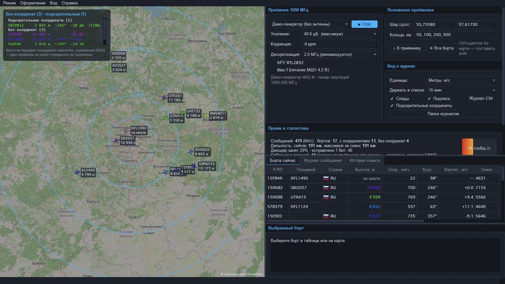
ТВ
Два прибора в одном окне. Аналоговое ТВ (SECAM/PAL D/K, PAL B/G, PAL I, NTSC M; сетки каналов России, Европы, Великобритании и США) — чёрно-белая картинка или звук, 9 палитр, снимок кадра, поиск каналов. Измеритель мультиплексов DVB-T/T2 для наведения антенны: канал собирается из пяти перестроек, считаются уровень, C/N и неравномерность, по циклическому префиксу определяются режим FFT и защитный интервал.

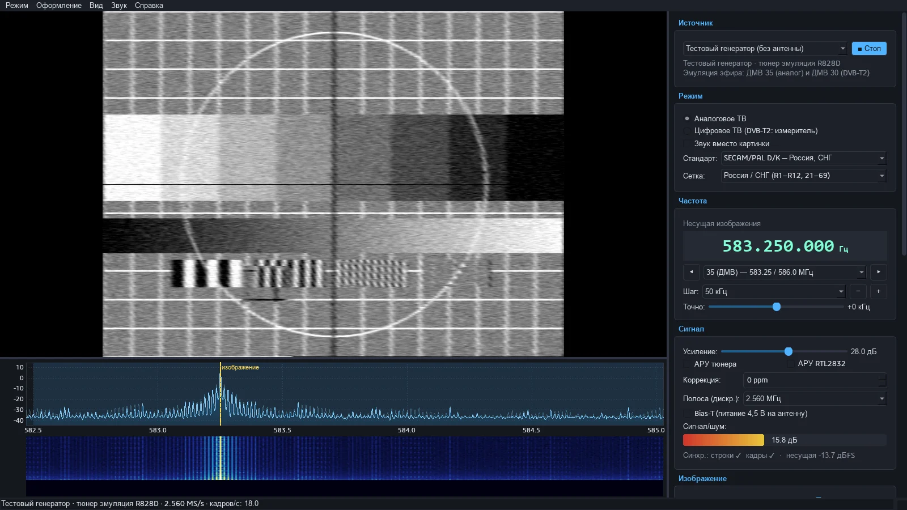

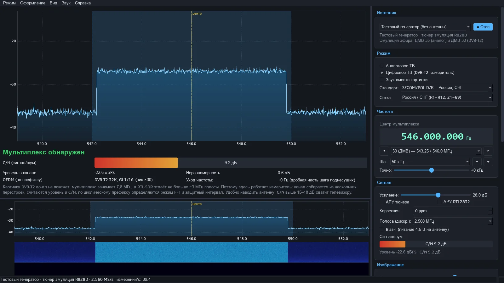

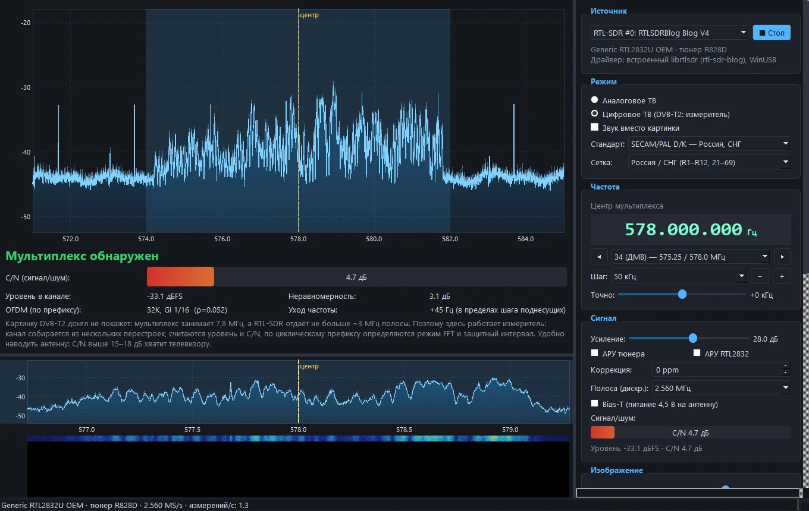

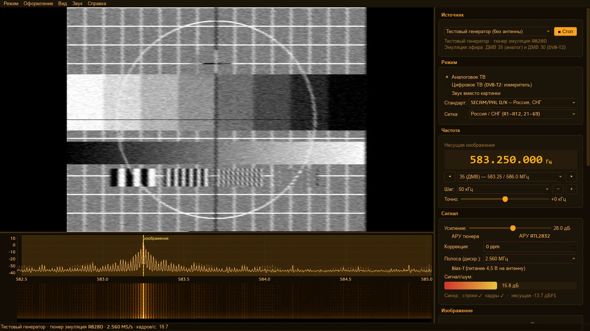
SSTV
Картинки, которые радиолюбители передают звуком: Robot 36/72, Martin M1/M2, Scottie S1/S2/DX, PD 50–290, Wraase SC2-180. Режим определяется по VIS-коду, наклон исправляется автоматически, картинка рисуется строка за строкой; галерея принятых и декодирование записанных WAV-файлов. Частоты КВ (14,230 МГц) и МКС (145,800 МГц).

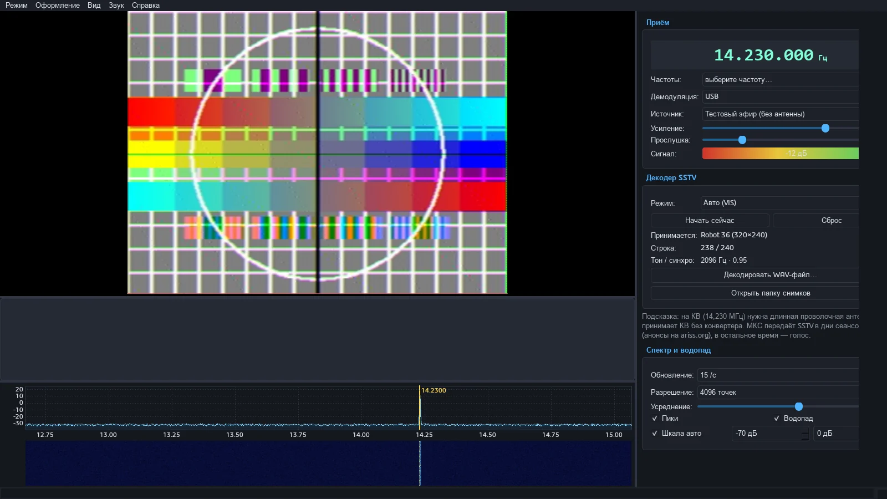
APRS
Пакеты радиолюбителей (AFSK 1200 бод) на карте: станции, треки, метеостанции, лента пакетов с расшифровкой, фильтры, журнал. Наземная сеть 144,800 МГц и ретранслятор МКС 145,825 МГц с коррекцией доплера.

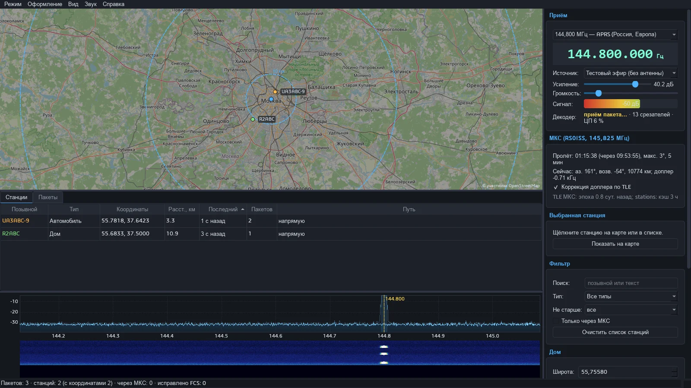
И ещё
- «Устройства…» — RTL-SDR со встроенным драйвером, сетевой rtl_tcp, HackRF One и Airspy R2/Mini (через их DLL), проверка драйвера WinUSB.
- «Настройки» — одна папка данных для снимков, записей и журналов; перенос файлов из прежних мест.
- Автообновление с GitHub Releases: программа сама предложит новую версию.
- Руководство на 19 страниц — от «что такое SDR» и децибел до антенн и доплера; то же, что на этом сайте.

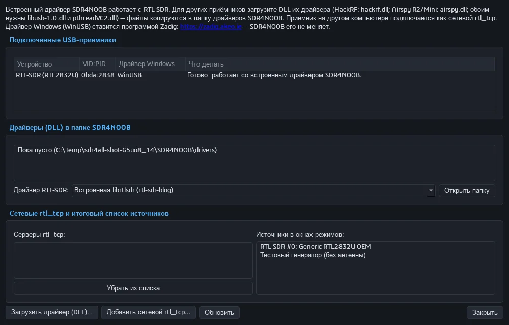

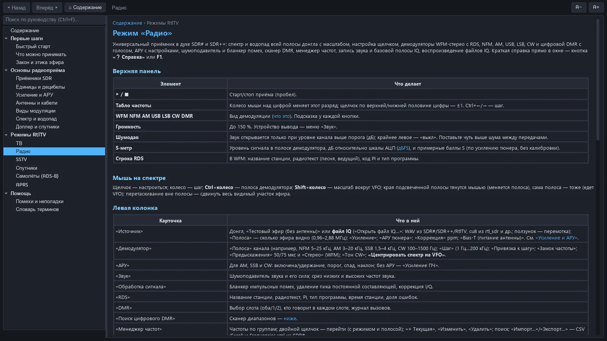
Системные требования#
- Windows 10 или 11, 64 бит. Python ставить не нужно — всё внутри архива.
- Приёмник: RTL-SDR Blog V4 (R828D) и V3, другие донглы на RTL2832U (R820T/R820T2 и т. п.); также HackRF One, Airspy R2/Mini и сетевой rtl_tcp.
- Драйвер WinUSB на донгле — ставится один раз программой Zadig (как). Сам librtlsdr уже встроен.
- Двухъядерный процессор и выше; для полосы 2,4 МГц и больше — порт USB 2.0 без перегруженных хабов.
- Интернет нужен только для карт, орбит (TLE), справочника бортов и проверки обновлений.
Установка#
- Скачайте архив
SDR4NOOB-<версия>-win64.zipсо страницы последнего выпуска. - Распакуйте его в папку, куда у вас есть права записи (например,
C:\SDR4NOOB). - Запустите
SDR4NOOB.exe. Если донгл ещё не работал с SDR-программами — один раз поставьте WinUSB через Zadig. - Дальше программа обновляется сама.
Подробно: установка, драйвер, обновление и удаление →
Быстрый старт#
- Подключите донгл с антенной из комплекта, запустите SDR4NOOB и выберите «Радио».
- Нажмите WFM, в «Менеджере частот» дважды щёлкните «FM-вещание 87,5–108 МГц», затем щёлкните по «горбу» станции на спектре — зазвучит музыка, появится название (RDS).
- Меню «Режим → Выбрать другой режим…» (Ctrl+M) → «Самолёты (ADS-B)» → «▶ Старт»: через несколько секунд на карте появятся борта.
- Нет антенны — поставьте на экране выбора галочку «Без антенны: тестовый эфир» и изучайте окна.
Руководство#
Честные ограничения#
- DVB-T2 картинки нет и не будет: мультиплекс занимает 7,8 МГц, а RTL-SDR отдаёт не больше ~3,2 МГц. Цифровой режим ТВ — это измеритель для наведения антенны.
- Аналоговое эфирное ТВ в России выключено с 2019 года; режим пригодится за рубежом, для кабельных и любительских передач и на тестовом генераторе. Картинка чёрно-белая (цветовая поднесущая не помещается в полосу), звук и изображение одновременно не принимаются.
- «Метеор-М» требует антенны для 137 МГц (V-диполь или QFH) на открытом месте, пролёта с возвышением от ~30° и тихого эфира без помех; комнатный штырь снимка не даст. «Электро-Л» — только с тарелкой и МШУ.
- Один канал (VFO) за раз; dPMR, NXDN, TETRA, P25, D-STAR и System Fusion не декодируются; APRS 9600 бод — тоже.
- SDR4NOOB — только приёмник: передавать он не умеет. Слушать служебные переговоры можно, разглашать — нельзя (подробнее).
Лицензия#
SDR4NOOB — свободная программа под лицензией GPL-3.0-or-later. Внутри — librtlsdr (сборка rtl-sdr-blog, GPL-2.0-or-later), mbelib (ISC), Qt/PySide6 (LGPL-3.0), numpy, scipy, sgp4 и другие компоненты; полный список с лицензиями и источниками — в THIRD_PARTY.md. Декодирование голоса DMR (AMBE+2) может затрагивать патенты — используйте эту функцию на свой страх и риск.